决定（2026-11） 除了武器配件槽，其余全部要做
实施方案写在 docs/PLAN.md 第 14 节，按依赖排成 6 个里程碑：
| 里程碑 | 内容 |
|---|
| M14 | 修 bug：悬空落地（按网格面积落地、叠放集装箱、check:props）、没有声音（解锁 / 恢复 / 换设备 / 音量曲线 / 测试按钮 / exe 自检） |
| M15 | 数值透明：加成来源登记（Ledger）、Tab 三页数值后台（基础 → 各来源 × 倍率 → 最终，含实测 DPS）、战斗复盘页 |
| M16 | 武器台「枪机」射速线、升星 ★1–★3 特性、霰弹枪和后期枪的平衡 |
| M17 | 爬行者、重装感染者、5 种风险事件、每章搜刮点 |
| M18 | 渲染实验场景、接触阴影、GTAO、夜晚 HDRI、阴影分级、地面贴花、调色 LUT |
| M19 | 分类音量、武器图标、武器台 3D 预览、强化前后对比、配色统一 |
一句话结论
ChatGPT 的方向大体对，但它只看了 GitHub 上的文档，很多建议游戏里已经有了，有几条和现有设计冲突。下面每条都标了状态：
已有代码里已经实现
建议做 / 已排期要做，见 PLAN.md 第 14 节
不做和现有设计冲突、收益太低，或你决定不做
| ChatGPT 的建议 | 状态 | 实际情况 |
|---|
| 车辆、集装箱悬空 · 统一落地检测 | 建议做 | 实测第一章大部分车是贴地的；模型检查发现 car_truck、container_rust 等几个模型底下有零碎网格，落地点算低了。要做的是加一个自动检查，不是全部重摆。 |
| 没有声音 · 排查 AudioContext | 建议做 | 浏览器和打包好的 exe 里，AudioContext 都能正常进入 running 状态，所以问题不在它说的初始化。需要你那边的复现信息（见下文）。 |
| Tab 面板：基础 + 加成 + 百分比来源 | 建议做 | 现在的 Tab 只有最终值，而且大部分是「—」，确实没法排查。值得重做，公式要按游戏实际的乘法链来写。 |
| 武器五项属性：伤害、后坐、连射、重量、填弹 | 已有 | 大厅武器台已有伤害、后坐、轻量化、扩容四条线，重量真的影响移速；缺的是「连射」这条线。 |
| 强化 +0~+10 · 升星 1~5 星 | 已排期 | 局内工坊 8 级 + 武器台 3×4 级 + 这次加的熟练度 5 级，已经有三层。再加两层只会更乱，建议把「升星」做成熟练度满级后的额外几星。 |
| 武器击杀数解锁特性（熟练度） | 已有 | 这次已经做了：用哪把枪杀怪就涨哪把的熟练度，决定等级上限、武器台等级和下一把枪的解锁。 |
| PBR / HDRI / 阴影 / ACES / Bloom / 雾 | 已有 | 都已经开着：ACES 色调映射、PCF 阴影、PMREM 处理的 HDRI、UnrealBloom、指数雾、Poly Haven PBR 模型。缺的是 AO、接触阴影和地面贴花。 |
| 爬行者 / 吐酸者 / 尖啸者 / 重装 | 已有一半 | 吐酸者、尖啸者已经有了（它看的文档是旧的）。爬行者和重装感染者可以加。 |
| 随机事件：停电、迁徙、空投、精英… | 已有一半 | 已有夜晚词缀（血月、浓雾、停电、尸群、精英夜）、白天空投、夜间挑战。可以补「风险换收益」的事件。 |
| 武器配件槽 | 不做 | 你决定不做：和武器台强化线作用重叠。 |
| 战斗复盘页 | 建议做 | 数据大部分已经在统计里（击杀分类、受伤、建造），这次又加了每把枪的击杀。工作量小、对平衡排查帮助大。 |
| 换 UE / Unity | 不建议 | 它自己也说不需要换。同意。 |
成长重做 你最关心的：手枪玩四五局才轮到冲锋枪 · 已完成
原来的问题：一局普通玩家能拿 20–90 勋章，冲锋枪解锁只要 40 勋章、列兵就能买，第一局结束就能换枪，手枪没有存在意义。
新规则：武器熟练度
- 用哪把枪打死僵尸，就涨哪把枪的经验：击杀 +1，爆头击杀再 +1。炮塔、地刺的击杀不算。
- 熟练度 0–5 级，决定这把枪能升多高：局内工坊上限 5 → 6（2 级）→ 7（4 级）→ 8（精通）；武器台每条线 1 / 2 / 3 级分别要熟练度 1 / 3 / 5。
- 解锁下一把枪：上一把精通，再花勋章。勋章再多也跳不过去。原来用勋章买的「等级上限」全部删掉。
- 手枪熟练度 3 解锁双持，精通解锁「随身武器」（开局直接拿新枪，不用每局攒零件买）。
- 结算页显示这局每把枪涨了多少；武器台和军械库显示熟练度进度和还差多少。存档纪元 +1，更新后进度会重置。
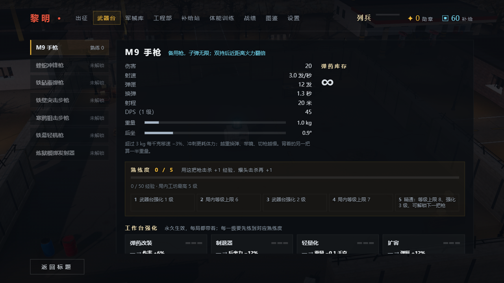
武器台：熟练度进度条、每一级的奖励、强化线需要的熟练度
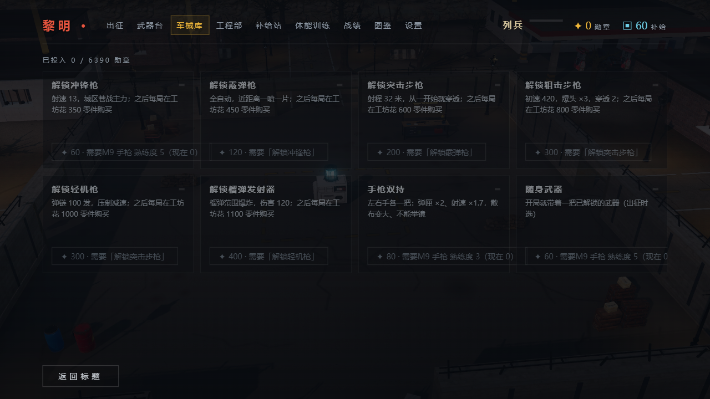
军械库：「解锁冲锋枪 · 需要 M9 手枪熟练度 5（现在 0）」
模拟结果 npm run sim:progress -- --runs 60（机器人按真实规则连打 60 局，每局结束结算、去大厅花钱；机器人不会爆头，按人类 15% 爆头率补经验）
| 武器 | 开始用 | 精通 | 练了几局 | 主用时每局经验 | 精通门槛 |
|---|
| M9 手枪 | 第 1 局 | 第 5 局 | 5 | 114 | 500 |
| 冲锋枪 | 第 6 局 | 第 9 局 | 4 | 187 | 680 |
| 霰弹枪 | 第 10 局 | 第 21 局 | 12 | 46 | 480 |
| 突击步枪 | 第 30 局 | 第 34 局 | 5 | 308 | 1300 |
| 狙击步枪 | 第 37 局 | 第 42 局 | 6 | 76 | 500 |
| 轻机枪 | 第 50 局 | 第 56 局 | 7 | 133 | 880 |
| 榴弹发射器 | — | — | 60 局内没到 | — | 680 |
带什么枪收益最高 同一套局外加成，每把枪熟练度 2，各打 3 局
| 只带这把 | 平均撑几夜 | 每局勋章 | 这把枪击杀 | 工坊价 | 结论 |
|---|
| 突击步枪 | 5.0 | 74 | 278 | 600 | 最强，穿透从一开始就有 |
| 手枪 | 4.0 | 48 | 168 | 0 | 零成本，前期性价比最高 |
| 冲锋枪 | 4.0 | 46 | 139 | 350 | 和手枪差不多：350 零件买它，前几夜反而少了炮塔 |
| 轻机枪 / 榴弹 | 3.0 | 30 | 70–90 | 1000+ | 太贵，第 3–4 夜才买得起 |
| 霰弹枪 / 狙击 | 2.3–2.7 | 23–28 | 52–54 | 450 / 800 | 机器人用不好（站桩、不瞄头），人类会好一些 |
还需要你拍板的两个平衡问题（这次没改，因为会动到枪本身的数值）：
- 霰弹枪太难练：机器人每局只有 46 经验，要 12 局才精通，卡在冲锋枪和步枪之间。建议霰弹枪近距离伤害 +15%，或把精通门槛再降到 380。
- 后期枪工坊价太贵：轻机枪 1000、榴弹 1100 零件，前三夜都买不起。有了「随身武器」后能直接带进局，问题小一些，但没买随身武器的人会觉得解锁了也用不上。
- 勋章节奏：机器人 60 局累计 2110 勋章，整张表 6390，大约 180 局买满。机器人最远只到第 9 夜、没通关过，真人通关一次就是 270+ 勋章，按你上次「太简单」的反馈，这个总价我先不动。
悬空的车和集装箱 建议做
我在第一章把每个停车位、集装箱都截了图：大部分是贴地的。真正有问题的是少数几个模型自身的「落地点」算错了。
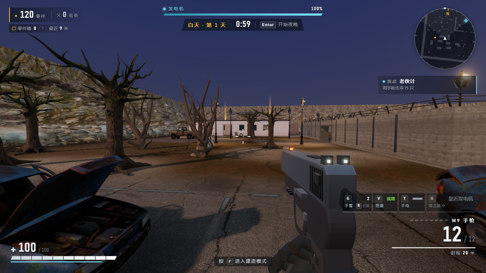
停车场：轿车轮胎贴地，阴影正常
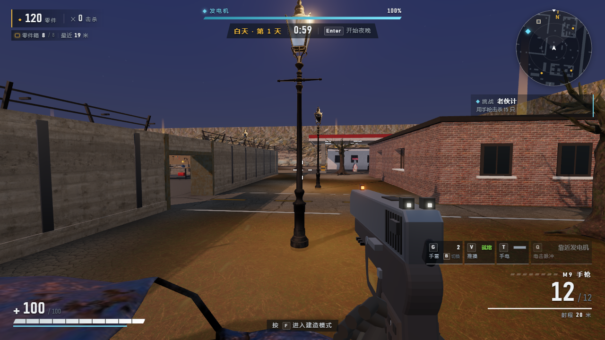
路边的车：同样是贴地的
 叠放的集装箱：两层之间有一条缝，底层底边有一圈浮起
叠放的集装箱：两层之间有一条缝，底层底边有一圈浮起
原因
代码按模型的最低点落地（realProps.ts loadModel：-box.min.y）。如果一个模型底下还挂着别的网格（阴影片、拖车钩、底盘碎片），最低点就比轮胎低，整辆车被抬起来。我写了个检查脚本 node scripts/tools/prop-ground.mjs，逐个模型列出「最低点」和「其余网格的最低点」：
| 模型 | 模型高度 | 最低点 | 其余网格最低 | 判断 |
|---|
| car_truck（皮卡） | 12.00 | 0.00 | 1.79 | 车身离地 15%，最可能就是你看到的悬空 |
| container_rust（锈集装箱） | 5.93 | −1.00 | −0.70 | 底下有 5% 的零件，箱体浮起 |
| car_sedan2 / car_crashed | — | — | — | 各浮起约 5%，肉眼不明显 |
| wooden_crate_01 等带脚的箱子 | — | — | — | 脚本误报：箱子本来就有支脚 |
怎么修
- 和树一样，给这几个模型配一个「落地百分位」（代码里已有
GROUND_PCT，树就是这么修的）；或者按「面积最大的几个网格的底」落地，而不是全局最低点。
- 叠放集装箱：第二层的 y 用上一层模型的实际高度，不用
h / layers 平均分。
- 把
prop-ground.mjs 改成按网格面积判断（去掉带脚箱子的误报），加进 props:import，以后导入新模型自动报警。ChatGPT 说的「红色异常框调试模式」可以不做，脚本报出来就够了。
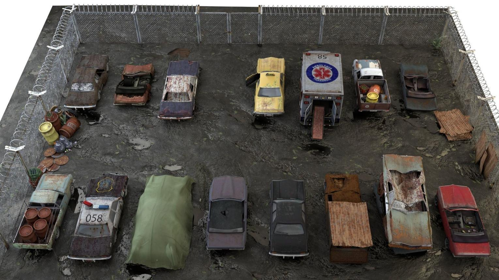
它给的落地参考：轮胎压进地面、车底有接触阴影
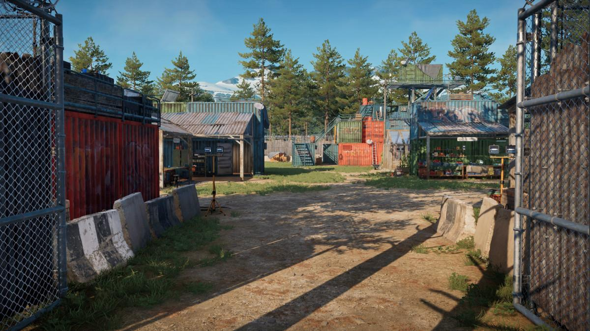
集装箱底边有一圈暗的接触阴影，这是「贴地感」的关键
注意：参考图看起来「贴地」，很大一部分是接触阴影 / AO的功劳，我们现在没有（见渲染一节）。所以修完落地点后，再加一层 AO 效果会好很多。
没有声音 建议做 · 需要你的复现信息
ChatGPT 列的排查顺序是通用的，我按它的思路实际测了：
| 检查项 | 浏览器（vite dev） | 打包 exe（release/win-unpacked/Dawn.exe） |
|---|
| AudioContext 能创建 | ✓ | ✓（Electron 45.2.2 / Chrome 156） |
| 第一次点击 / 按键后 unlock | ✓ 点击前 ready:false，点击后 state:"running" | ✓ 新建的上下文直接是 running |
| 主音量 | 0.8（存档默认值） | — |
| 离线渲染一段正弦波 | — | 峰值 1.0，合成器能出数值 |
| TACZ 枪声文件 | — | 能读到 manifest；手枪的 gun.json 里没有 ogg 路径 → 枪声走程序合成 |
结论：音频引擎本身是好的，exe 里也能正常出声。可能的原因要靠你那边的信息缩小范围：
- Windows 音量合成器里「黎明 / Dawn」被单独静音了（Electron 应用会单独出现一项）。
- 进游戏前从来没有点过鼠标或按过键：现在 unlock 只挂在
pointerdown / keydown 上，如果直接用手柄或者触屏，就永远不会解锁。
- 存档里音量被拖到了 0：设置页的音量是平方曲线（0.2 实际只有 4%），听起来像没声音。
- 耳机 / 输出设备在游戏开着时切换：AudioContext 不会自动跟着换设备。
请告诉我：是浏览器版还是 exe 版？完全没声音还是只有部分（比如有 UI 声没枪声）？设置里音量是多少？我会针对性修。同时建议加两处保险：设置页加一个「测试声音」按钮；窗口重新获得焦点时如果上下文是 suspended 就再 resume 一次。
Tab 数值后台 建议做
 现在的 Tab：属性只显示最终值，没有加成的项一律「—」，看不出基础是多少、哪来的加成
现在的 Tab：属性只显示最终值，没有加成的项一律「—」，看不出基础是多少、哪来的加成
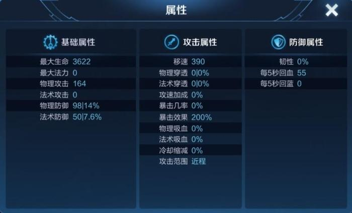
王者荣耀的属性详情：基础值 + 额外值分开写
注意 ChatGPT 公式的问题
它给的统一公式是 (基础 + 固定加成) × (1 + Σ百分比)，而且它自己的例子都算错了（写 138、实际是 150）。我们游戏不是这样算的：卡牌、局外、武器台、难度都是各自相乘（例如伤害 = 武器等级伤害 × 武器台 × 卡牌伤害 × 暴击 × 爆头 × 距离衰减）。面板必须照实际算法显示，否则排查时显示值和实际伤害对不上，反而误导。
建议的样子
武器伤害基础 23（手枪 1 级）× 1.06 武器台× 1.10 卡牌·火力26.8
射速基础 3.0 发/秒× 1.70 双持× 1.04 射击训练5.3 · 318 RPM
移动速度基础 100%× 1.03 负重训练× 0.94 重量 5.0 kg96.8%
受到伤害基础 100%× 0.96 防弹插板× 0.88 卡牌·护甲84.5%
零件收益基础 100%× 1.25 困难× 1.05 零件收益131%
基础局外（武器台 / 训练）本局（卡牌 / 词缀）
做法
- 每个加成源在修改
g.mods 时顺便登记一条「来源 · 倍率」（卡牌、局外、难度、章节、词缀、武器台、重量），Tab 只读这张表，不再自己重算。
- 每行显示 基础值 → 各来源（乘号）→ 最终值，绿色是增益、黄色是减益；有上限的（射速、移速下限 0.76）标出「已触顶」。
- 加一行「实测」：本局这把枪实际造成的伤害 / 开火时间，和理论 DPS 对比，平衡问题一眼能看出来。
- 射速同时显示 RPM（ChatGPT 这条建议是对的）。
- sim 里加一个检查：Tab 显示的最终值和
statsOf() 实际返回的一致，防止面板和逻辑脱节。
武器强化与升星 大部分已有 升星已排期
你要的五项属性：伤害、后坐力、连射性、重量、填弹数。现在的武器台已经有四项（弹药改装 = 伤害、制退器 = 后坐、轻量化 = 重量、扩容 = 填弹），每条 3 级、花补给、永久生效；重量真的会减移速和举镜速度。
| 你要的 | 现在 | 建议 |
|---|
| 伤害 | 弹药改装 +6% / 级 | 保留 |
| 后坐力 | 制退器 −12% / 级 | 保留 |
| 连射性 | 没有 | 建议做加「枪机」线：射速 +4% / 级，显示 RPM |
| 重量 | 轻量化 −12% / 级 | 保留 |
| 填弹数 | 扩容 +12% / 级 | 保留 |
| 升星 | 没有 | 做成熟练度精通之后的「★1–★3」：继续用这把枪杀怪，每星给一个特性（例：手枪 ★1 爆头击杀返还 1 发、冲锋枪 ★1 换弹后 2 秒射速 +15%），不加纯数值，避免后期数值爆炸 |
| 杀敌数特性 | 这次已做熟练度 | 熟练度负责「解锁」，升星负责「特性」，两者都看同一个击杀数，玩家只需要记一件事：用哪把就练哪把 |
 改装界面：左边大图、右边属性对比。我们的武器台可以加一个 3D 枪模型预览（TACZ 模型已经有了）
改装界面：左边大图、右边属性对比。我们的武器台可以加一个 3D 枪模型预览（TACZ 模型已经有了）
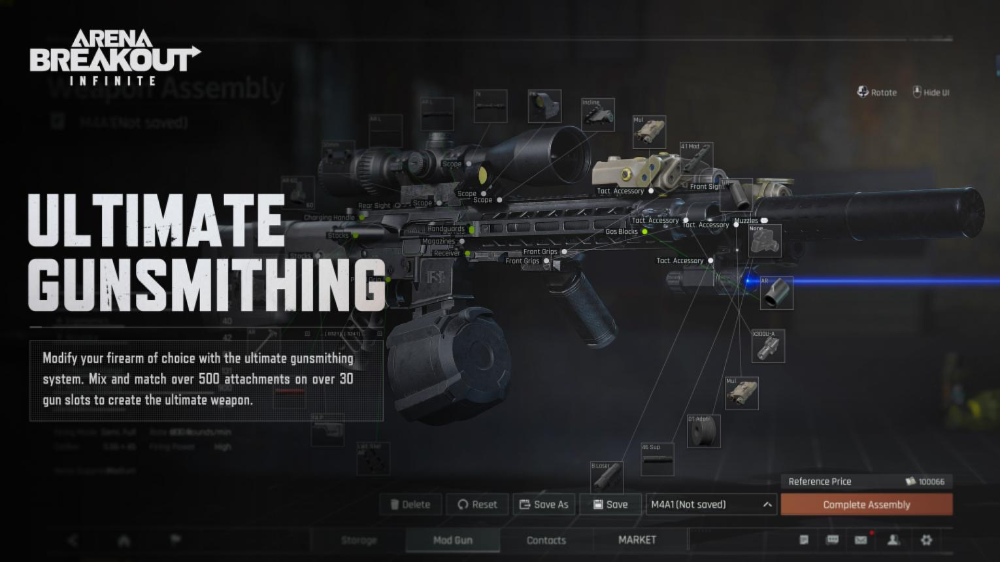
属性条要同时显示「改装前 → 改装后」和变化百分比
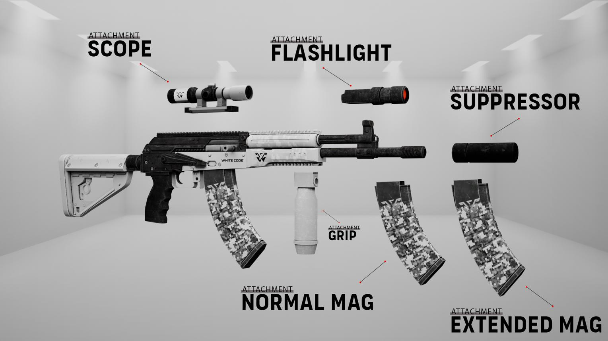
配件槽：不做（和武器台强化线重叠）
3D 渲染：参考图那种效果怎么做 大部分管线已经有了，缺的是细节层
ChatGPT 给的 Three.js 配置（ACES、PCF 阴影、HDRI、雾）我们的 view.ts / lighting.ts 里都已经是这样配的。参考图比我们好看，差距主要在下面几处：
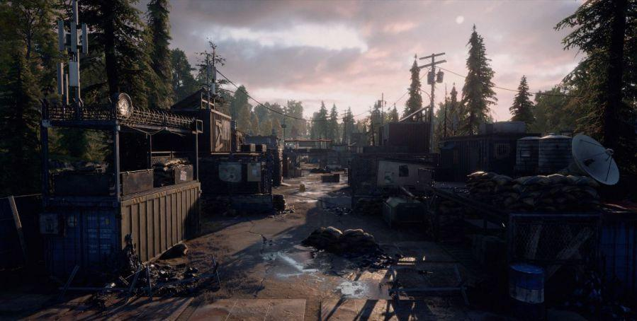
参考场景：注意地面上的杂物、裂缝、积水和物体底部的暗边
接触阴影：轮胎和地面交界处最暗，这是我们最缺的
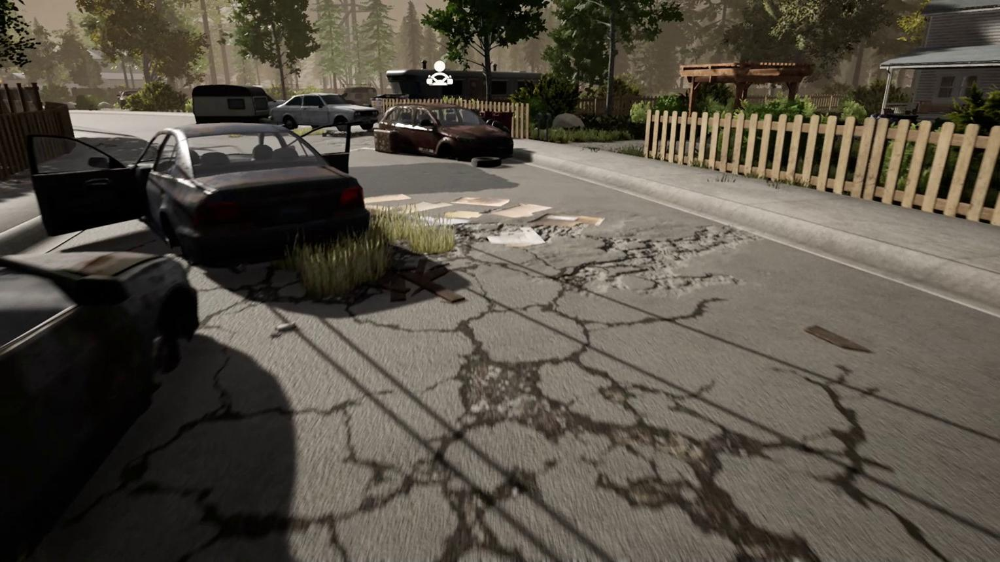
地面细节：贴花（油污、轮胎印、血迹）+ 碎石散布
| 环节 | 现在 | 建议 |
|---|
| PBR 材质 | 已有Poly Haven / Sketchfab 模型自带全套贴图 | — |
| HDRI 环境光 | 已有PMREM 处理，换掉了 scene.environment | 夜晚换一张偏冷的 HDRI，现在白天和夜晚共用一张 |
| 色调映射 / 雾 / Bloom | 已有ACES + 指数雾 + UnrealBloom | — |
| 阴影 | 已有PCF，太阳投影 | 中高画质改 PCFSoft 或 VSM，边缘柔一些 |
| 环境光遮蔽 AO | 没有 | 建议做后期加 GTAO（three 自带 GTAOPass），高画质开、低画质关。效果最明显的一步 |
| 接触阴影 | 没有 | 建议做车、集装箱底下放一张模糊的暗色贴片（成本几乎为零，低画质也能开） |
| 地面贴花 | 少量 | 已排期DecalGeometry 撒油污、轮胎印；战斗中的弹孔、血迹也用它 |
| 调色 | 没有统一调色 | 已排期加一张 LUT，统一末日偏冷色调 |
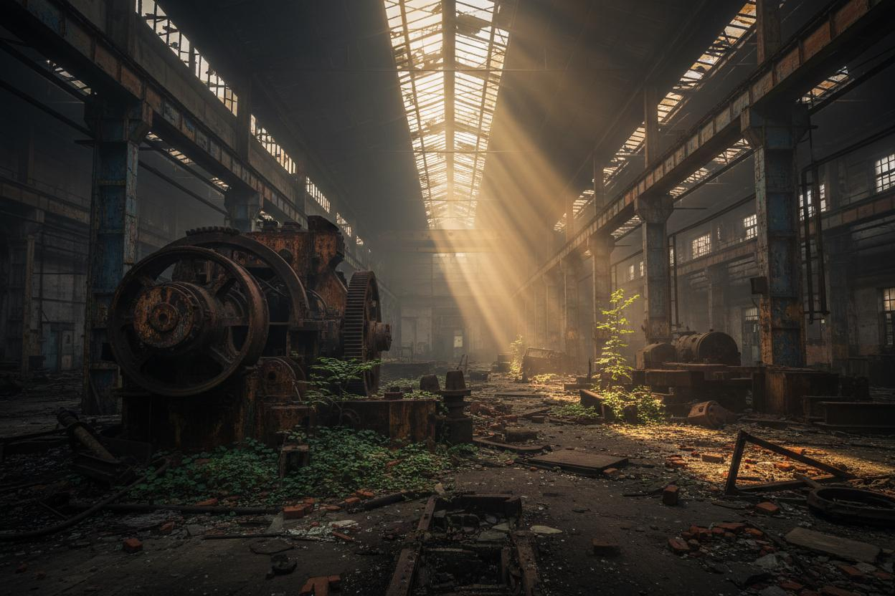
后期对比：AO + 调色带来的层次感
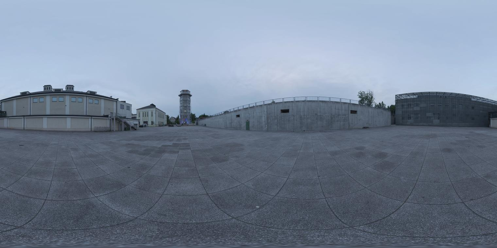
HDRI：阴天、黄昏、夜晚各一张，按时间混合
它建议的「渲染实验场景」（一辆车、一个集装箱、一段路，能实时切开关）我同意，用现有的 ?props=1 预览加几个开关就行，不需要新建工程。性能上它提醒的「僵尸不要投高质量阴影」也对，现在僵尸是投影的，尸潮多时可以在低画质关掉。
UI 风格 已排期
它建议的配色（深灰底、军绿 / 橙黄强调、暗红危险、半透明面板）和我们现在基本一致。现在缺的是「物品感」：图标、稀有度颜色、3D 武器展示。
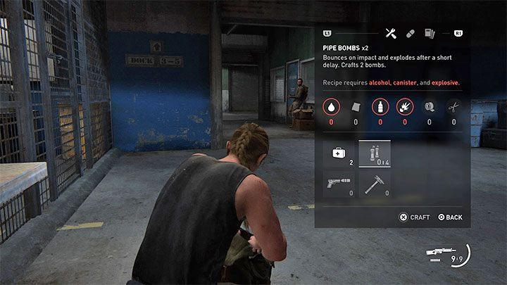
物资界面：图标 + 数量，比纯文字列表好扫
 工坊：武器大图在左、操作在中、属性在右
工坊：武器大图在左、操作在中、属性在右
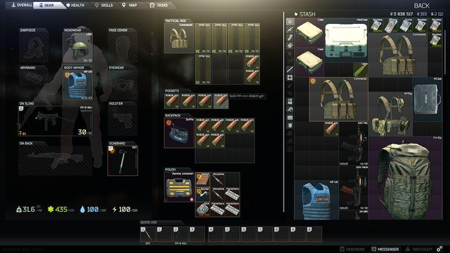
背包网格：我们没有背包系统，不需要
- 武器台左侧的武器列表加枪的剪影图标（可以用 TACZ 模型离线渲染一张）。
- 熟练度精通的枪名字用金色，和普通区分（这次已经加了金色的「熟练 5」）。
- Tab 拆成「属性 / 武器 / 战况」三页，现在三栏挤在一屏。
- 稀有度颜色（蓝紫金）先不做：我们没有掉落装备，颜色没有对应的东西。
新内容建议 按性价比排
| 内容 | 状态 | 说明 |
|---|
| 战斗复盘页 | 建议做 | 结算页加：每把枪击杀 / 伤害占比、炮塔击杀、建筑承伤、每夜时间线（第几夜发电机掉血最多）。玩家知道自己为什么输。 |
| 爬行者 | 建议做 | 矮、快，从路障下钻过、优先咬人。逼玩家看脚下，配合现有的地刺。 |
| 重装感染者 | 建议做 | 正面减伤 60%，背后和头正常。让狙击 / 绕后有意义，正好补狙击「用不上」的问题。 |
| 风险事件 | 已排期 | 例如「军事广播：守住空投 60 秒换一把高级枪的熟练度经验 ×2」。现有词缀都是纯负面 + 零件补偿，可以加选择。 |
| 地图搜刮点 | 已排期 | 白天去地图边缘的危险区开箱子，给补给 / 熟练度经验。让白天不只是待在发电机旁边建东西。 |
| 分类音量（武器 / 僵尸 / 环境 / UI） | 已排期 | 引擎里加 4 个子总线就行，和「没声音」的排查一起做。 |
 爬行者
爬行者
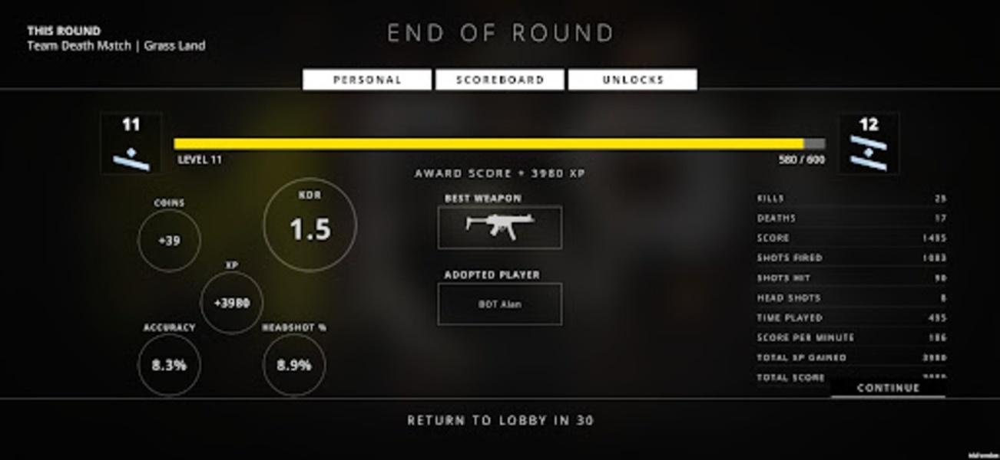
结算统计页
建议排期
| 批次 | 内容 | 状态 |
|---|
| 这次 | 武器熟练度、解锁链、等级上限按熟练度、结算显示、成长模拟 sim:progress | 已完成全部模拟和类型检查通过 |
| 下一批 | 落地修复（皮卡、锈集装箱、叠放）+ 落地检查脚本；接触阴影；没声音的保险措施（等你的复现信息） | 待做 |
| 再下一批 | Tab 数值后台（来源登记 + 乘法链显示 + 实测 DPS）；武器台「枪机」射速线；战斗复盘页 | 待做 |
| 之后 | GTAO、夜晚 HDRI；爬行者、重装感染者；升星特性 | 再定 |